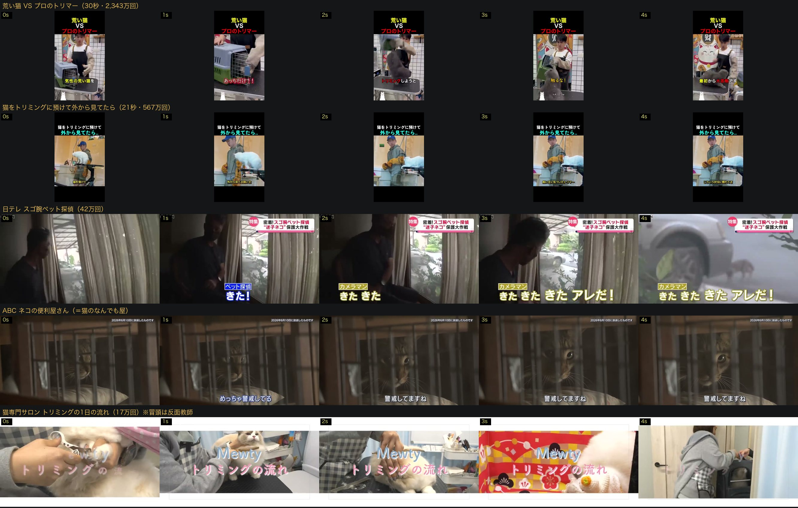

RUNBIRD ／ AI動画事業
各45秒 / 16:9 / 音声なし（BGM・ナレーションは後段）。同じ猫・同じ店・同じ画風で訴求だけを変えたシリーズとして設計しています。 1本目を確定させれば2・3本目は横展開で済むため、ディレクション1回で3本ぶんのヒアリングが成立するという判断の根拠そのものです。
受注シートで「アニメーション」にチェックが入っているのは1本目だけです。 2本目・3本目は「広告系」のみでアニメーション指定がありません。そこで3本すべてをアニメ調と実写風の両方で作りました。 カット割り・テロップ・尺は左右で1文字も変えていません（比べる対象をテイストだけに絞るため）。
受注シート①「猫探偵をメインに推しだした動画」／残したい印象「猫いなくなったしここに頼んでみよー」／雰囲気 ☑アニメーション
空っぽのクッションから入り、飼い主の最悪の瞬間に寄せています。前半は夜の寒色、再会のカットから朝の暖色へ転換。
受注シート②「猫のシャンプーをメインに推しだした動画」／残したい印象「猫のシャンプーここに頼んでみよー」／雰囲気 ☑広告系
「猫って、お風呂に入れるの？」という素朴な疑問＝検討の入口から開幕。自宅の失敗をコミカルに描き、泡のカットだけ水色で抜いています。
受注シート③「全般のサービスを紹介する動画」／残したい印象「猫でなんかあったらここ行こう」／雰囲気 ☑広告系
4メニューをカットごとに差し色で区切り、保護猫活動は別枠として最後に置いています。
※ どちらかに統一しても、本ごとに変えても構いません。3本まとめてどちらで進めるかをご判断ください。
受注シートの「現場で見せた動画」欄に記載されていた1本です。今回のモックはこれを起点にしています。
チャンネル: R-A-D ／ YouTubeで開く 生存確認済み（2026-08-20）
正体は Petsalon J&C 様（当社の既存クライアント・犬のトリミングサロン）のAI動画でした。
つまり参考動画そのものは刺さっていて、業態だけが違ったということです。 猫版の実物が存在しなかっただけなので、それを3本作ったのが上のモックです。 主役を犬から猫に置き換え、猫特有の導線（脱走・猫は洗いにくい・預け先がない）に組み替えています。
参考動画はこの1本だけです。受注シートに記載があったのがこれのみで、他に候補は提示されていません。 8/24のディレクションでは、この猫版モックを見ていただいた上で「もっとこういう感じ」という方向を引き出すのが目的になります。
受注シートにあった1本（犬のサロン）とは別に、猫の業態で実際に数字が出ている動画を探し、 冒頭0〜4秒を1コマずつ分解しました。全て生存確認済みです。

↑ 5本の冒頭0〜4秒。横スクロールで拡大表示できます。
アニマル研究室 ／ 30秒 ／ 2,343万回（2026年4月投稿）
対立構図を宣言してから始める。途中から見た人にも「何の動画か」が常に分かる。
癒しのかわいい動物たち ／ 21秒 ／ 567万回（2026年4月投稿）
結末を隠す一文だけで最後まで持たせている。作りは非常にシンプル。
日テレNEWS ／ 約17分 ／ 42万回
探偵の説明・実績紹介から入らない。一番おいしい瞬間を先に見せてから巻き戻す構成。
ABCテレビ ／ 約16分
「ネコの便利屋さん」＝「猫のなんでも屋」と同じポジショニング。 猫の表情だけで間が持つことの証明でもあります。
にゃんちゅーぶ ／ 約13分 ／ 17万回
内容は良いのに、冒頭が「自己紹介」から始まっている。広告でこれをやると最初の2秒で離脱されます。 上の2本と見比べると差が分かりやすいので、あえて並べました。
1上部に固定テロップを置く（3本とも）
2,343万回の動画も567万回の動画も、画面上部に「何の動画か」を0秒から最後まで出し続けています。 今のモックはテロップが場面ごとに切り替わる作りなので、途中から見た人に業態が伝わりません。 「猫専門のにゃんでも屋 / 前橋」のような固定帯を足すのが有効です。 15秒広告の定石（冒頭2秒に「誰に」「何を」）とも一致します。
21本目は「発見の瞬間」から始める案も作る
今のモックは空っぽのクッション＝不在から入っています。情緒は出ますが、静かな立ち上がりです。 日テレの型に倣い、冒頭に「見つけた瞬間」を置いて、そこから時間を巻き戻す構成も比較用に作れます。 広告として強いのはおそらく後者です。
3猫にセリフを当てる
2,343万回の動画は、猫の行動に「あっち行け！！」「触るな！」とセリフを当てています。 猫コンテンツで最も伸びている型で、2本目（シャンプー）と相性が良い。 今のモックはナレーション主体なので、猫視点のセリフに寄せる案も出せます。
あわせて分かったこと（1本目の訴求に関わります）
猫探偵の競合（猫探偵・アニマルサーチ社）は「迷子猫の保護率83%」「関東最速即日対応」「2日間 54,800円」と、 具体的な数字で打ち出しています。 猫上等さんも自社の実績・料金が確認できれば、同じ土俵で戦える訴求になります。 逆に、根拠のないまま「大手より安い」だけを書くのは危険です（8/24の確認項目⑤）。
猫専門サロンはInstagram運用が主戦場です。投稿の型として参考になります。
猫専門トリミングサロン＋ペットホテル（越谷市）
猫上等さんとサービス構成がほぼ同じ（トリミング＋ホテル）。 施術前後の写真・動画中心で、LINEを予約導線にしている点も共通します。
※ 猫上等さんのInstagram（@neko_joto）のプロフィールにLINE公式があり、上記2社と同じ導線が既にできています。 動画のCTAをLINEに寄せる根拠になります。
Instagram の実査で、受注シートにない情報が3つ取れました。
① 本人の言葉で 「猫専門のにゃんでも屋」（キャッチとして強いので全3本で使用）
② LINE公式アカウントが存在（シート未記載・CTA候補に追加）
③ 「保護猫」はメニューではなく「売上の一部を充てる社会活動」（シート③の「保護猫」の正体）。4メニューと並列に置かず、別枠として扱っています。
言えないことは言っていません。
受注シート①の「大手よりも安く猫を探せる」は、自社料金と比較対象の根拠が未確認のため一切使用していません（景表法・優良誤認）。 「必ず見つかる」「発見率」「唯一」「No.1」も同様に不使用です。
「通しました」ではなく、ゲートが実際に捕まえたものを直しています。
| ゲート | 検出 | 対応 |
|---|---|---|
正本照合fact_check | キャッチが「猫専門の、にゃんでも屋」と読点1つズレ | 正本どおりに修正・再合成 |
正本照合fact_check | 屋号の「！！」が1箇所脱落 | 修正。あわせて「ナレ音声でのみ『猫上等』と読む」を正本に明記 |
テロップtelop_check | 冒頭5秒で急変4回＝チラつき（カットごとの黒フェードが原因） | ハードカットに変更。フェードは全体の頭と尻のみ |
| サイズ統一 | テロップが 76px と 62px の2サイズ混在 | 76pxに統一（最大幅1130px < セーフエリア1728px を実測し、縮小不要と確認） |
| エンドカード | QRが動画圧縮後にスキャン不能（168px） | 232px＋余白3モジュールに拡大。書き出し後のフレームから実際にデコード成功を確認 |
※ 機械チェックには文字欠けの指摘が残りますが、全フレームをセーフエリア枠つきで目視し、すべてOCRの誤読（AI生成画像の畳・毛並み・ボケ光を文字として拾う）であることを確認済みです。
動画に焼き込めない＝まだ確定していない情報です。
| 項目 | 内容 |
|---|---|
| 納品形態 | DVD ＋ ギガファイル便、送付先はご自宅。DVD焼きと郵送の工数・実費が発生します |
| 制作の進め方 | 1本目を先行確定 → 承認後に2・3本目へ横展開。世界観の手戻りを1本目に閉じ込めます |
| 未実施のゲート | クライアント提示前に /video-check（別環境の別AIによる独立目視）と Sanity Pause を必ず通します |